Recorded source evidence
Assistant-reviewed candidate envelopes, not confirmed tissue masks. Unknown pixels abstain. Review colours vary by annotation set; legends are embedded in each image. Source identity and polygon coordinates are saved alongside each annotation. Return to 3D review
P1 · frame 143152
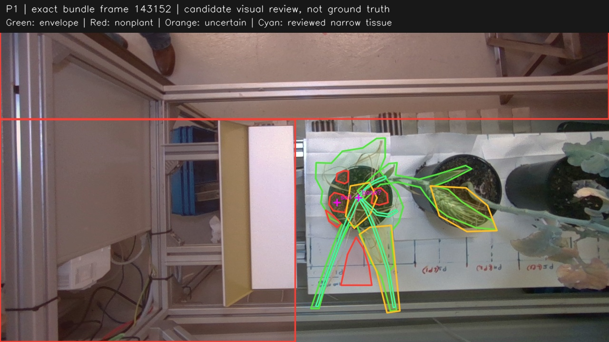
P1 is the first pot. Pale dry strands, long low-contrast tails, green blade and wheat ear/awns are all candidate plant. The ear projects over the second pot and P2 stem. Large internal envelope holes contain soil/board and are not positive plant labels. Soil patches are small deliberately, to avoid erasing strands crossing the pot. The approximate basal crossing is occluded by several strands and is not a measured stem attachment. Second-pass narrow tissue review refines visible stems/strands and attached leaf interiors after the fused cleanup overlay showed overbroad uncertainty. Actual ownership overlaps and image-boundary clipping remain uncertain.
P1 · frame 302754
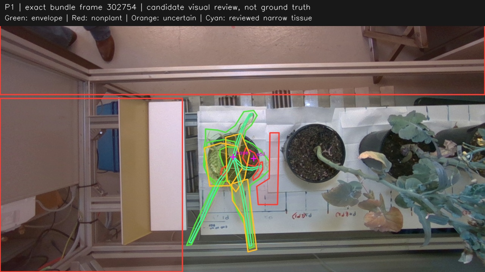
P1 ear is now projected over its own left pot rim; it is retained despite overlap with dry strands. This separated view confirms long pale tails and bent upper loops. The soil-to-strand separation is visible only in gaps, so the central pot region remains uncertain. Neighbor P2 begins in the second pot at image right; it is outside these P1 envelopes. Second-pass narrow tissue review refines visible stems/strands and attached leaf interiors after the fused cleanup overlay showed overbroad uncertainty. Actual ownership overlaps and image-boundary clipping remain uncertain.
P1 · frame 459309
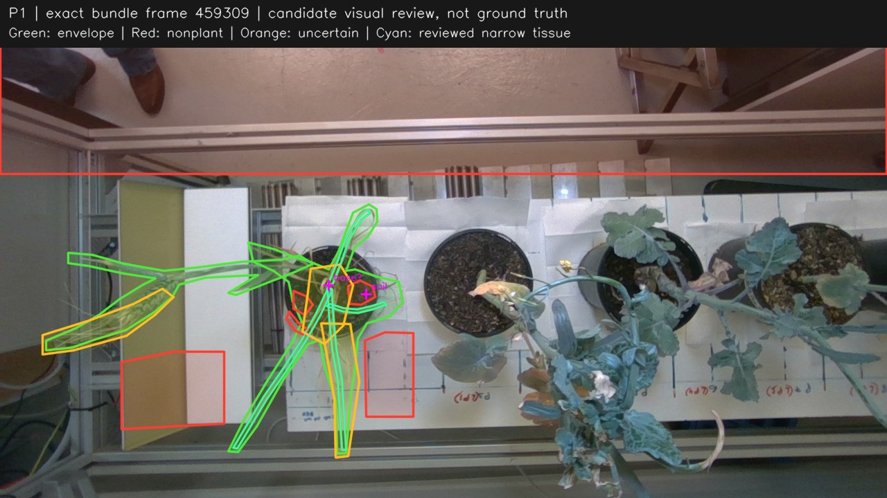
Separated lateral view confirms that the left green wheat ear/awns and the pale dry plant share the first pot. Candidate envelopes include fine awns against the rig and both long pale lower tails. Bare pot/soil patches exclude only visible gaps; no whole pot-disk subtraction is safe. Upper soil gaps and central strand crossings support approximate separation, but not an exact attachment or trait height. Second-pass narrow tissue review refines visible stems/strands and attached leaf interiors after the fused cleanup overlay showed overbroad uncertainty. Actual ownership overlaps and image-boundary clipping remain uncertain.
P2 · frame 249551
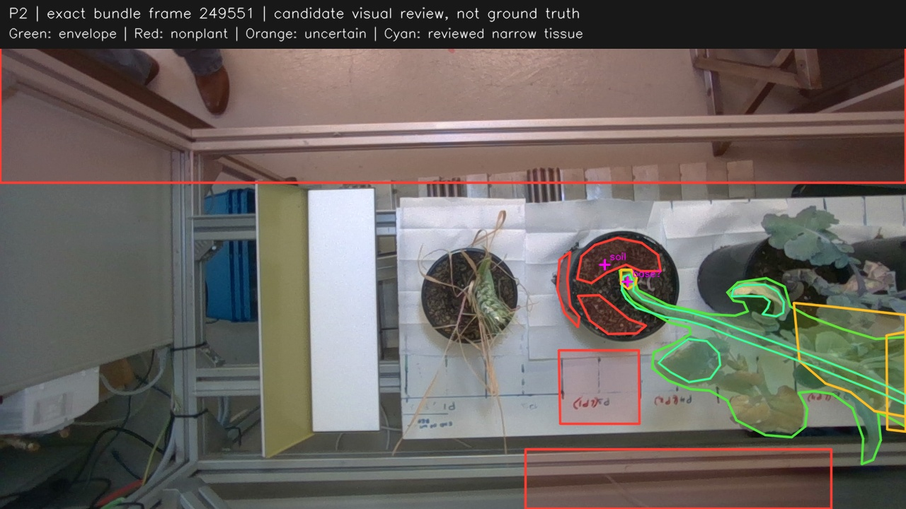
P2 starts from the bent green stem in the second pot. Candidate envelope follows that stem, yellow/brown leaves and green canopy to the right image boundary. Part of the canopy is outside this view, and P3 overlaps at the right, so absence outside the frame is not negative evidence. The bare soil above and left of the stem is clear; the actual stem-soil attachment is obscured/foreshortened. Second-pass narrow tissue review refines visible stems/strands and attached leaf interiors after the fused cleanup overlay showed overbroad uncertainty. Actual ownership overlaps and image-boundary clipping remain uncertain.
P2 · frame 459309
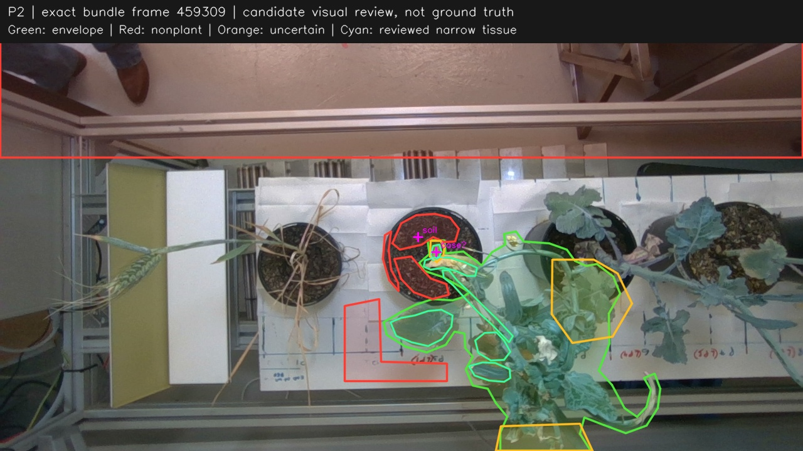
P2 stem and broad canopy now project below the second pot. Yellow/brown leaves, curled side branch, flowers and thin stems are retained alongside green tissue. The upper-right overlap with P3 is explicitly uncertain, and the lowest tissue is clipped at the image boundary. Separate soil patches above/left of the bent basal stem are visible. Image-space central stem position is approximate, not a trait origin. Second-pass narrow tissue review refines visible stems/strands and attached leaf interiors after the fused cleanup overlay showed overbroad uncertainty. Actual ownership overlaps and image-boundary clipping remain uncertain.
P2 · frame 670589
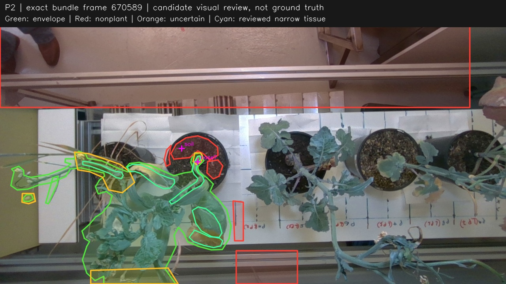
Bent stem emerges from second pot and joins P2 canopy to the left/below. Thin flower stems, yellow/white flower remnants, brown leaves and a small pale candidate fragment are deliberately included; the fragment is uncertain rather than discarded by size or colour. P2 branches cross P1 near the first pot. Lowest tissue leaves the image. Two bare-soil patches bound the visible green basal stem, supporting only approximate plant/soil separation. Second-pass narrow tissue review refines visible stems/strands and attached leaf interiors after the fused cleanup overlay showed overbroad uncertainty. Actual ownership overlaps and image-boundary clipping remain uncertain.
P3 · frame 618150
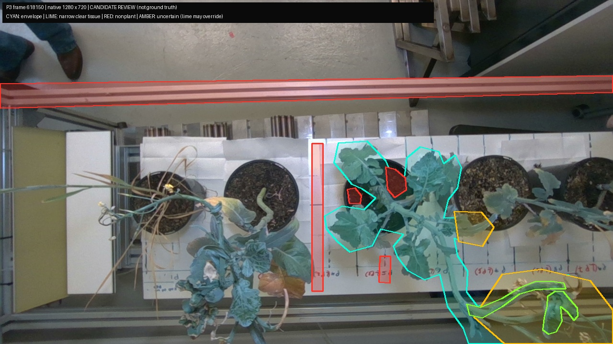
P3 is the central leafy specimen at pot near (794,411). Envelope deliberately follows its long low trunk and branch to the bottom/right image edges and retains low broad leaves. Bottom-right intertwined stems and the right-side crossing toward P4 are ambiguous. Visible exposed pot/soil patches, board strip, and overhead rig are explicit nonplant samples; no full pot silhouette is erased across foliage. Image-edge truncation must not imply absent geometry.
P3 · frame 824869
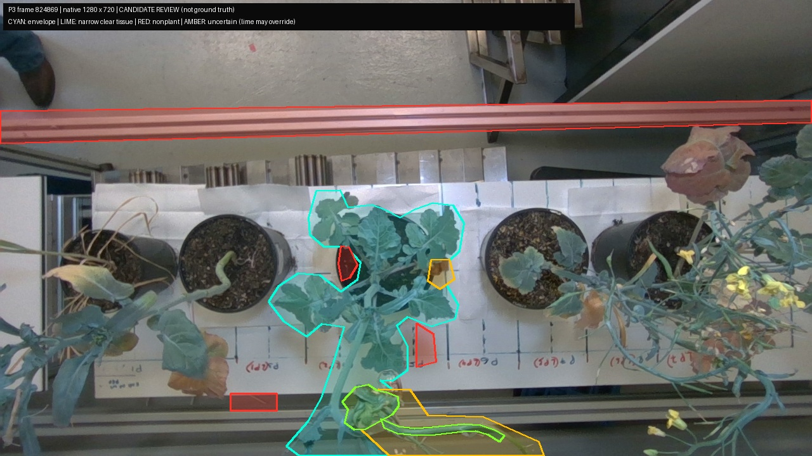
P3 is the leafy pot near (606,413), with thick trunk descending to (515,649). All low leaves and bottom-border branch fragments are retained in the candidate envelope. The lower right branch has uncertain identity where it continues toward P4; the small right crossing is also unresolved. Soil exclusions are only exposed patches, not plant-base or height ground truth.
P3 · frame 1055904
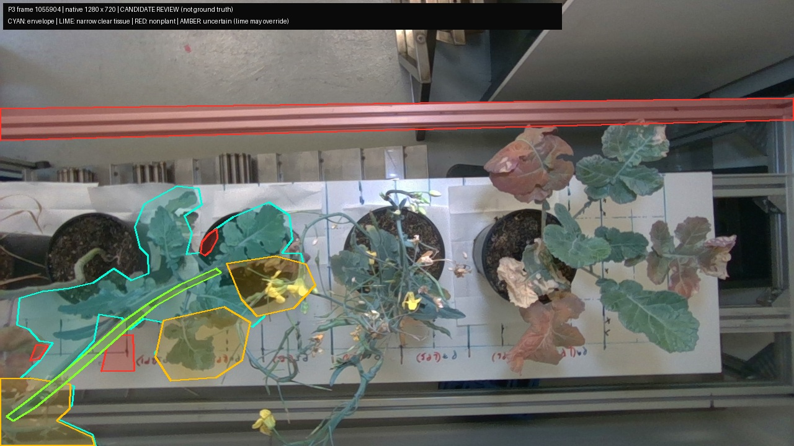
P3 is the pot near (408,418) and the broad leaves/trunk extending left/down. P4 flower-bearing thin branches cross in front of its right and low leaves; those overlap areas are explicitly uncertain. P3 low leaves are kept even where their attribution is occluded. The low left edge also mixes fragments of P2 and P3. Yellow blossoms inside an uncertain P3 envelope are not asserted to belong to P3.
P4 · frame 851470
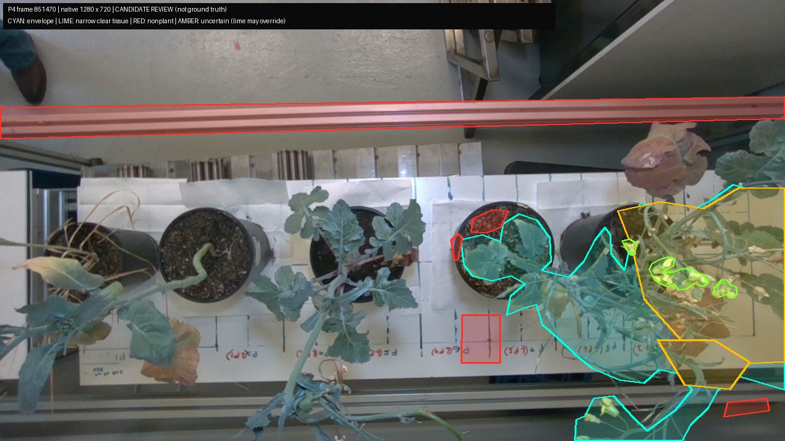
P4 is the exposed-soil pot near (820,410), whose plant extends strongly right and down. Envelope includes pale/yellow flowers, white/pale buds, thin branching stems and lowest visible yellow flower at (988,670), without color or component-size selection. P4 crosses P5 extensively on the right; those leaves/stems are uncertain rather than assigned from color. Some branches leave right/bottom edges. Upper rig, exposed pot/soil, board, and an unobscured lower rail patch are explicit exclusions.
P4 · frame 1003470
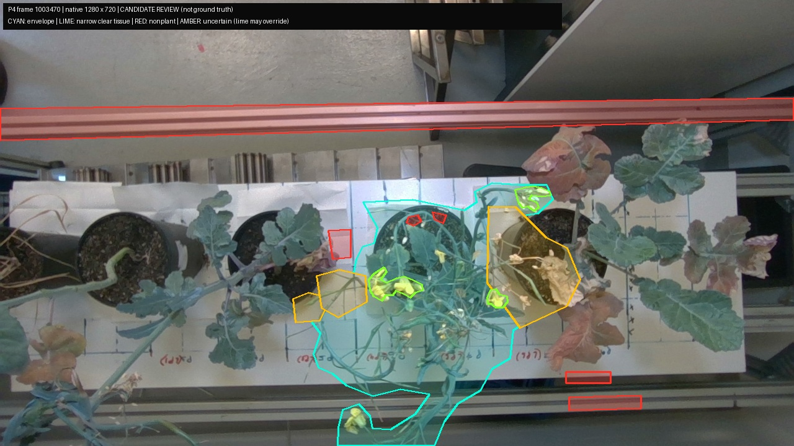
Central P4 view keeps the complete visible flower/bud-bearing envelope, including very pale buds near (868,310), yellow blossoms, pale senescent pieces, fine stems, and bottom yellow flower. Exposed soil is annotated conservatively because buds and thin stems cross the pot. P3 contact on left and P5 contact on right remain uncertain. Lowest stems leave the image and are not reconstructed by annotation.
P4 · frame 1160788
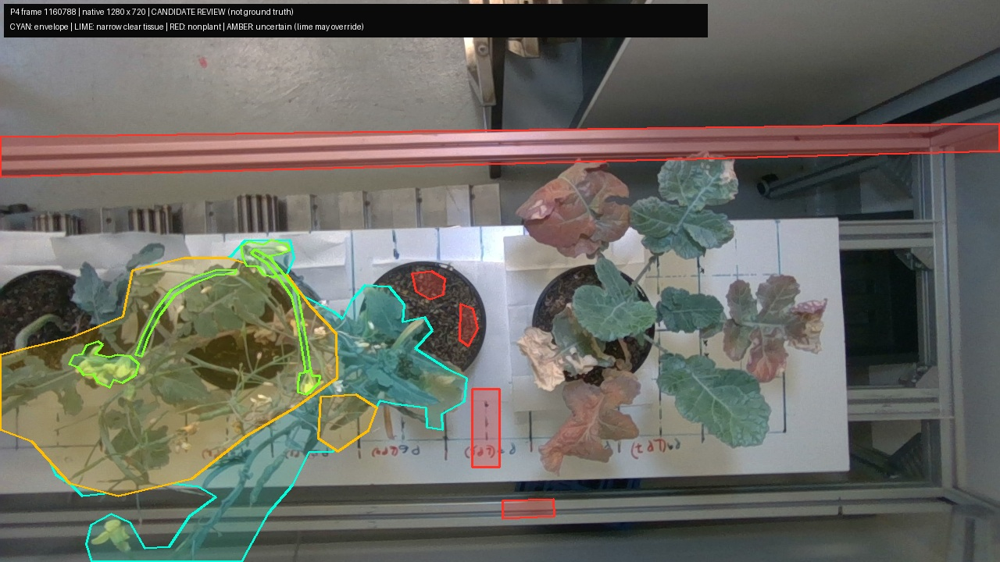
P4 is the soil-dominated pot near (545,414). It now projects left over P3, so a broad cross-plant overlap is retained as uncertain, including fine stems and yellow flowers. Buds at top near (340,320), pale/cream floral pieces, low yellow flower near (143,684), and thick low stem are preserved in the envelope. This is a weak identity-disambiguation view but valuable corroboration of flower/stem presence. It cannot establish absence at the left or lower border.
P5 · frame 1030829
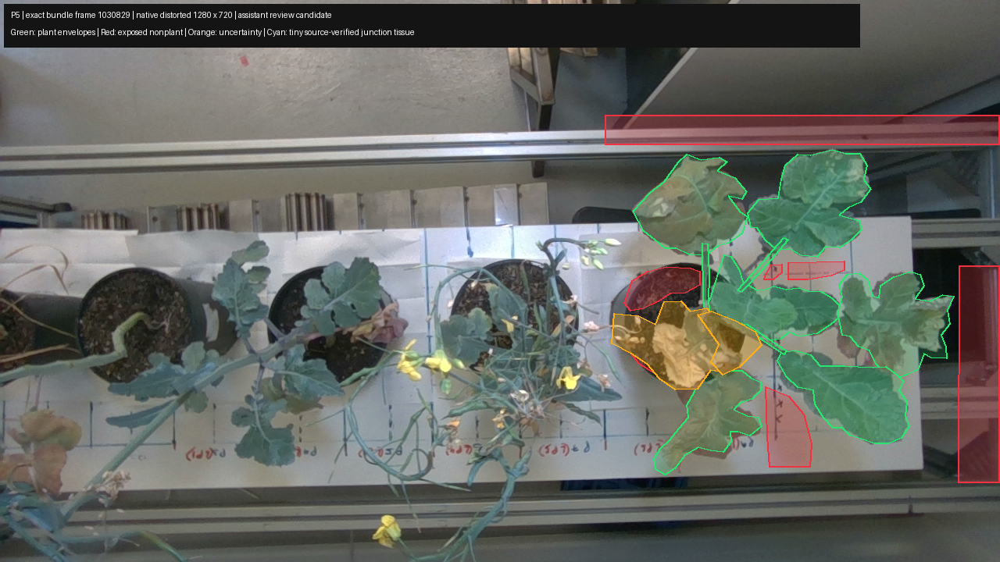
View from the earlier rightmost-pot pass. Six broad green/red/brown leaves and narrow visible petioles are positive candidates. Pale curled tissue and crossing P4 flower/petiole material at the left/lower pot are uncertain. Pot/soil labels cover only visible patches; no whole-pot silhouette is used to veto leaves in front.
P5 · frame 1445026
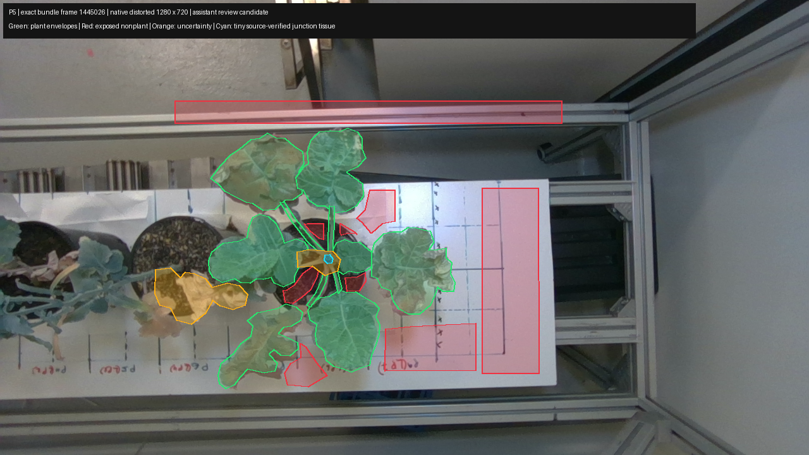
Exact middle bundle view. Distinct green, reddish and partly necrotic leaves remain positive without a green-only threshold. Left pale tissue over/near the adjoining pot is retained uncertain because its attachment crosses P4/P5 projections. Stem junction over soil is additionally uncertain to avoid treating polygon precision as ownership proof.
P5 · frame 1639585
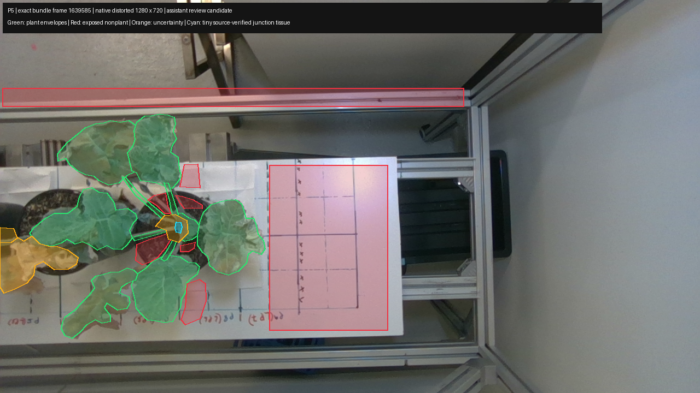
Late exact bundle frame. P5 leaves and brown tissue remain distinguishable; left overlap reaches the image edge and is uncertain. Offscreen points must abstain, never become nonplant votes. Exposed soil patches are separated from petioles and foreground leaves; unknown pixels remain unreviewed.